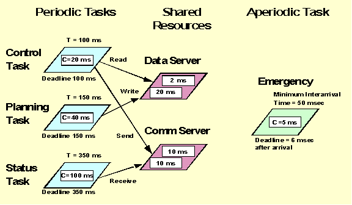
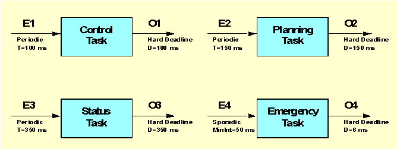
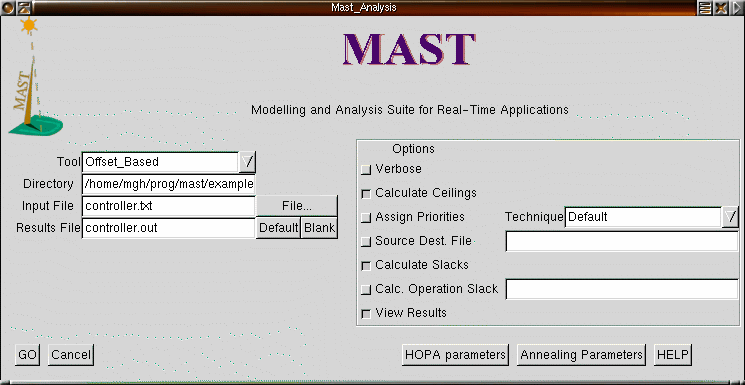

MASTModeling and Analysis Suite for Real-Time Applications |
This document describes how to use the MAST suite through a guided simple example. The example is a real-time application with four tasks. Three of them are periodic tasks that synchronize through the use of two shared resources. The fourth task is an aperiodic sporadic task. Although MAST support multiprocessor and distributed systems, this simple example runs all its tasks concurrently in the same CPU. The figure below shows the main timing requirements of the task set.

In this figure T represents the period of a task, and C its worst-case execution time (i.e., the time it takes to execute it supposing that no other tasks are running). The numbers inside the shared resources are the worst-case execution times of the corresponding protected operations (Read, Write, Send, and Receive). We can see that the deadlines of the periodic tasks are equal to their periods.
For this example, we want to perform the
worst-case response time analysis. This implies calculating the worst case
response times (or finalization times) of all tasks, taking into account
that they all run concurrently, and taking into account the effects of
synchronization for using the shared resources in a mutually exclusive
way, and the overheads introduced by the task context switching.
Processing_Resource ( Type => Fixed_Priority_Processor, Name => CPU_1, Worst_Context_Switch => 0.25);
For this protocol we can specify the priority ceiling of each resource, or we can let the tool calculate the optimum ceilings. We will do the latter. Therefore, the shared resources section will look like:
Shared_Resource ( Type => Immediate_Ceiling_Resource, Name => Data_Server); Shared_Resource ( Type => Immediate_Ceiling_Resource, Name => Comm_Server);
Among the different
scheduling policies that are available, we will chose the simplest one:
Fixed_Priority_Policy.
For this policy, the only scheduling parameter is the priority. For our
task set, we will use the deadline monotonic priority assignment, which
is optimum for tasks with deadlines at or before their periods. In this
assignment, the highest priority is assigned to the shortest deadline.
Therefore, we will assign priorities as follows:
| Task | Deadline | Priority |
| Control_Task |
|
|
| Planning_Task |
|
|
| Status_Task |
|
|
| Emergency |
|
|
With this priority assignment, the scheduling servers section will be described as follows:
Scheduling_Server ( Type => Fixed_Priority, Name => Control_Task, Server_Sched_Parameters => ( Type => Fixed_Priority_policy, The_Priority => 3), Server_Processing_Resource => CPU_1); Scheduling_Server ( Type => Fixed_Priority, Name => Planning_Task, Server_Sched_Parameters => ( Type => Fixed_Priority_policy, The_Priority => 2), Server_Processing_Resource => CPU_1); Scheduling_Server ( Type => Fixed_Priority, Name => Status_Task, Server_Sched_Parameters => ( Type => Fixed_Priority_policy, The_Priority => 1), Server_Processing_Resource => CPU_1); Scheduling_Server ( Type => Fixed_Priority, Name => Emergency, Server_Sched_Parameters => ( Type => Fixed_Priority_Policy, The_Priority => 4), Server_Processing_Resource => CPU_1);
Operation ( Type => Simple, Name => Read, Worst_Case_Execution_Time => 2, Shared_Resources_List => (Data_Server)); Operation ( Type => Simple, Name => Write, Worst_Case_Execution_Time => 20, Shared_Resources_List => (Data_Server)); Operation ( Type => Simple, Name => Send, Worst_Case_Execution_Time => 10, Shared_Resources_List => (Comm_Server)); Operation ( Type => Simple, Name => Receive, Worst_Case_Execution_Time => 10, Shared_Resources_List => (Comm_Server));Now we can define the operations that are executed by each of the four tasks. The operations that use protected operations (also called critical sections) are defined as enclosing operations (because they encloses the critical sections together with some other code). The Emergency task does not invoke any of the protected operations, and thus is defined as a simple operation. The description is:
Operation ( Type => Enclosing, Name => Control, Worst_Case_Execution_Time => 20, Composite_Operation_List => (Read,Send)); Operation ( Type => Enclosing, Name => Planning, Worst_Case_Execution_Time => 40, Composite_Operation_List => (Write)); Operation ( Type => Enclosing, Name => Status, Worst_Case_Execution_Time => 100, Composite_Operation_List => (Receive)); Operation ( Type => Simple, Name => Emergency, Worst_Case_Execution_Time => 5);

In the description of each transaction there are three groups of data that we need to specify:
Transaction ( Type => Regular, Name => Control_Task, External_Events => ( (Type => Periodic, Name => E1, Period => 100)), Internal_Events => ( (Type => regular, name => O1, Timing_Requirements => ( Type => Hard_Global_Deadline, Deadline => 100, Referenced_Event => E1))), Event_Handlers => ( (Type => Activity, Input_Event => E1, Output_Event => O1, Activity_Operation => Control, Activity_Server => Control_Task))); Transaction ( Type => Regular, Name => Planning_Task, External_Events => ( (Type => Periodic, Name => E2, Period => 150)), Internal_Events => ( (Type => regular, name => O2, Timing_Requirements => ( Type => Hard_Global_Deadline, Deadline => 150, Referenced_Event => E2))), Event_Handlers => ( (Type => Activity, Input_Event => E2, Output_Event => O2, Activity_Operation => Planning, Activity_Server => Planning_Task))); Transaction ( Type => Regular, Name => Status_Task, External_Events => ( (Type => Periodic, Name => E3, Period => 350)), Internal_Events => ( (Type => regular, name => O3, Timing_Requirements => ( Type => Hard_Global_Deadline, Deadline => 350, Referenced_Event => E3))), Event_Handlers => ( (Type => Activity, Input_Event => E3, Output_Event => O3, Activity_Operation => Status, Activity_Server => Status_Task))); Transaction ( Type => Regular, Name => Emergency, External_Events => ( (Type => Sporadic, Name => E4, Min_Interarrival => 50)), Internal_Events => ( (Type => regular, name => O4, Timing_Requirements => ( Type => Hard_Global_Deadline, Deadline => 6, Referenced_Event => E4))), Event_Handlers => ( (Type => Activity, Input_Event => E4, Output_Event => O4, Activity_Operation => Emergency, Activity_Server => Emergency)));
Once we have described the application in the MAST description file, we can execute the analysis tool to determine the worst-case response time for each or the tasks. By comparing these response times with the timing requirements, we can determine if the system is schedulable or not.
In our example, all the analysis tools that we have will provide the same exact response time results. They provide different results only for distributed systems, because the offset-based techniques are more exact than the holistic analysis. For distributed systems, they all provide upper bounds to the real response times.
The simplest way to invoke the analysis tool is through the "gmast" graphical driver. A screenshot of this graphical tool is shown next:

On the left hand side of the gmast window we can choose the analysis tool to use (The Offset_Based tool is selected in the figure), and the directory and input file to use. The "File..." button allows us browsing the directory searching for the desired file. In the figure we can see that the file "controller.txt", containing the MAST description of our example, is selected. We can also specify where the output will go to. If we leave it blank, it will go to the standard output. Otherwise, it will be stored in the specified file, in the same directory as the input file.
On the right hand side we can choose the options used for the tool. We have chosen "Calculate Ceilings", because we did not set the priority ceilings of the shared resources. In addition, we have requested calculation of the slacks. The latter will cause the tool to provide the transaction slack of each transaction, as well as the system slack. The transaction slack is the percentage of execution time that we can add to all the operations of the transaction while still keeping the system schedulable (or, if negative, the percentage by which we need to reduce the execution times to make the system schedulable). The system slack is the percentage by which we can increase (or decrease) the execution times of all the operations in the system while keeping the system schedulable (or to make it schedulable). The slacks are a very important piece of data, because they tell us how close or how far we are from becoming unschedulable (or schedulable).
Once we have set all the desired options,
we press the "GO" button, and the analysis tool is invoked. In this
case, the results will be stored in file "controller.out".
By looking at this file, we can determine the following response times
and slacks for our system:
|
|
|
|
|
|
|
|
|
|
|
|
|
|
|
|
|
|
|
|
And the system slack is 8.59%. We
can see that the system is schedulable. The emergency task has very little
possibility of growth, but one of the other tasks may grow its execution
time between 23 and 39%.